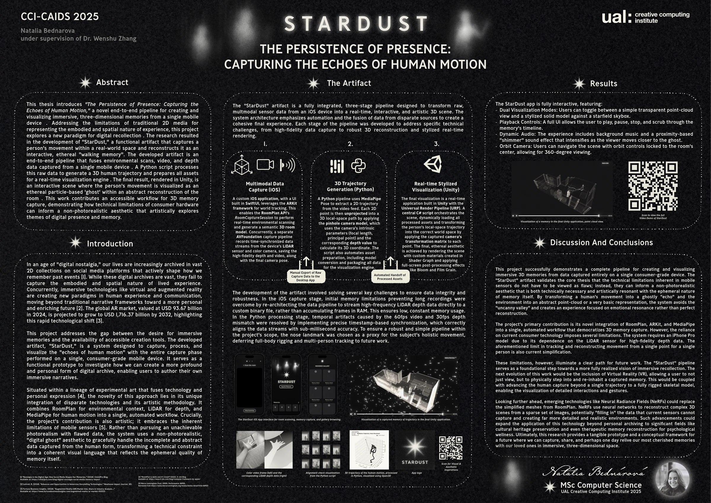
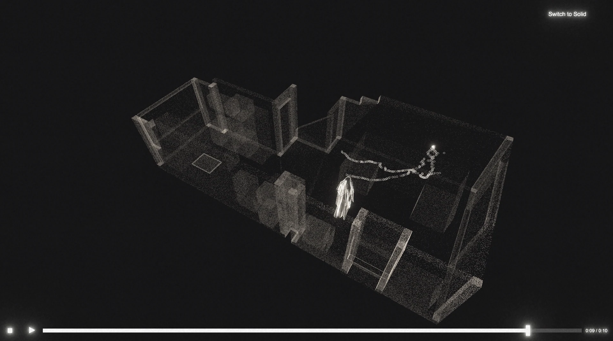
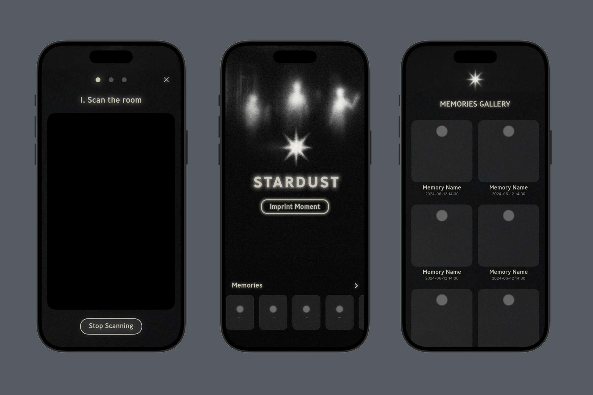
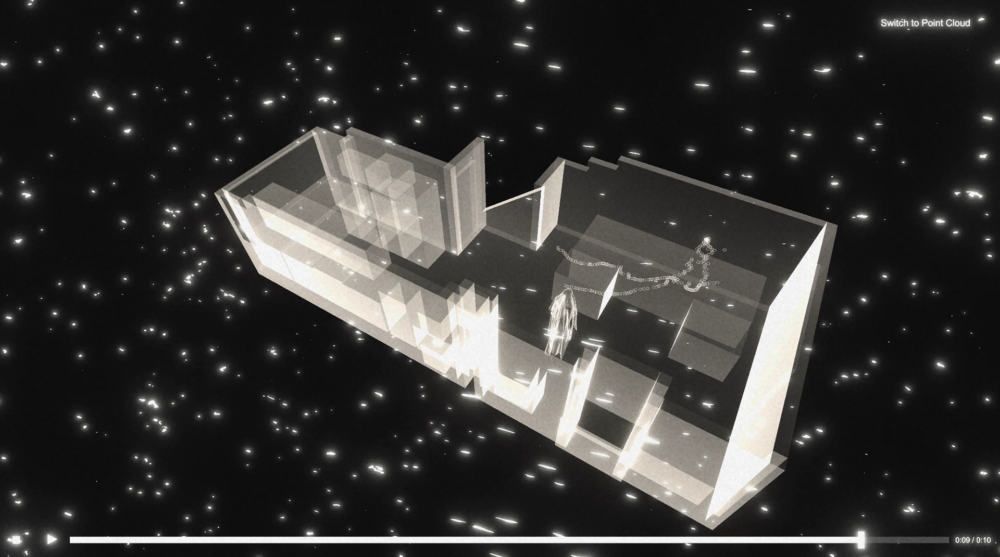
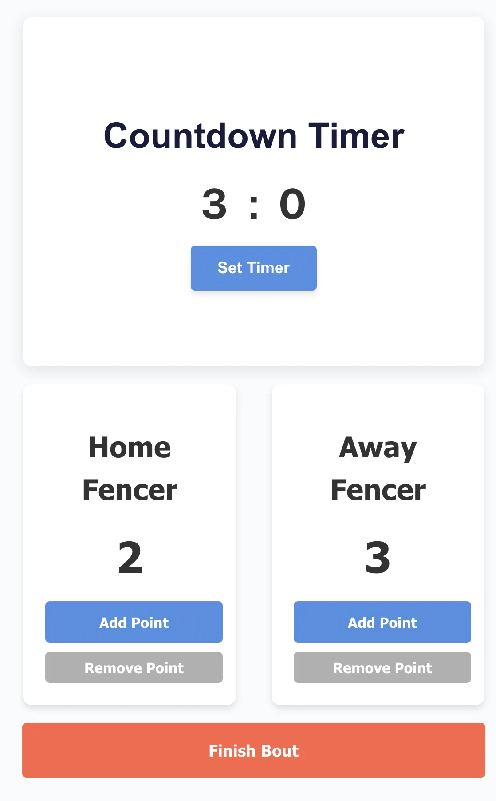
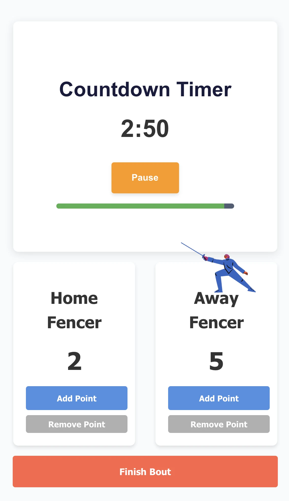

STARDUST
StarDust is an end-to-end pipeline for capturing and visualizing immersive, 3D "walking memories." The system transforms a recording of a person in a real-world space into an interactive, ethereal scene, allowing the user to re-experience a moment by viewing the subject's movement as a ghostly "echo" within a stylized reconstruction of the environment.
The process begins with a custom iOS app that uses ARKit and RoomPlan to capture a 3D room model, alongside time-synchronized video and LiDAR depth data. A Python and MediaPipe Pose backend then processes this data, generating a 3D human trajectory by unprojecting 2D coordinates using a calibrated pinhole camera model. The final visualization is built in Unity with the Universal Render Pipeline (URP), where a central C# script dynamically loads all assets and transforms the trajectory into the correct world space.
The scene's unique, non-photorealistic aesthetic is achieved with custom materials built in Shader Graph and enhanced with post-processing effects like Bloom and Film Grain. The person's motion is rendered as an ethereal particle trail, and the application features full playback controls and an interactive orbit camera for exploring the memory.
My project was awarded 1st place on the 2025 CCAIDS Student conference.




Meteo vis
Meteo Vis is an interactive 3D globe visualisation showcasing NASA's meteorite landing data, allowing users to explore over 15,000 meteorite impacts across Earth's surface.
Built with Three.js and vite, the application creates a dynamic 3D Earth globe with meteorite points positioned at their exact geographic coordinates. The visualisation efficiently renders thousands of meteorites with size representing mass and colour indicating landing year.
The interface features an interactive timeline slider that filters meteorites by year (1490-2013), as well as search functionality to find specific meteorites by name. The data comes from NASA's Data Portal via The Meteoritical Society's Meteoritical Bulletin Database.
Head runner
HeadRunner is an innovative take on the infinite runner genre, inspired by subway surfers and powered by an AI-driven, hands-free control system.
Built with C++ and OpenGL, the game uses a Python and MediaPipe backend to perform real-time facial landmark detection, tracking the player's head movements. This data is sent via a socket to the game, where my custom logic translates it into smooth lane changes.
The game features a procedurally generated track, 3D models, lighting, sound effects via OpenAL, and a HUD overlay built with ImGui.
See below a demo showcasing how the game can be controlled by Head movement, hand movement as well as using the keyboard
ReFFENCE
Reffence is a web-based fencing tournament management system that digitizes the traditional paper-based scoring system used in fencing competitions. The application provides a complete solution for tracking team rosters, managing match schedules, and recording live scores during bouts.
Built with React and Vite, the system features a tournament overview page where referees can input team member names and view all scheduled matches in a round-robin format. I was responsible for developing the referee interface: a real-time scoring and timing system that combines a configurable countdown timer with animated scoreboards.
The timer component allows referees to set custom bout durations (defaulting to 3 minutes) with full pause/resume functionality. A dynamic progress bar provides visual feedback, changing from green to yellow to red as time runs out. The scoreboards feature animated fencer silhouettes that appear with a bounce effect whenever a point is scored, providing immediate visual feedback during fast-paced matches.
The interface uses React hooks for state management, with all match data and scores persisted to localStorage for reliability.
The project won "Most Functional" at the university HackSprint '25 in London.


A fairly hungry caterpillar
A fairly hungry caterpillar is my take on the retro snake game - powered by ai.
Built with p5.js, The game uses ml5.js's AI facial landmark detection to track head movement in real time. I programmed custom logic to interpret these movements and steer the caterpillar - no keyboard necessary.
As the caterpillar eats apples, it grows longer and the player’s score increases. The game was tested at two speeds, though fair warning: the faster mode may result in mild neck strain.
IOT Twin House
A smart home system built in Unity, designed to mirror and control a real IoT-enabled house using MQTT communication. I was responsible for integrating the Unity <----> MQTT connection, enabling real-time two-way communication between the digital and physical environments.
Users can walk through the virtual house and control elements like lights and the bathroom fan. Sound design was spatially mapped - for example, the fan fades out as you leave the room, and audio doesn’t bleed through walls. The front porch light uses simulated motion detection with a 5-second timeout, just like the real-world setup.
The project was intended for VR and tested using the XR Toolkit. However, when deploying to the MetaQuest headset, the application consistently crashed at launch. Due to time constraints, we weren’t able to fully debug and resolve these issues, so the final build remained desktop-based.